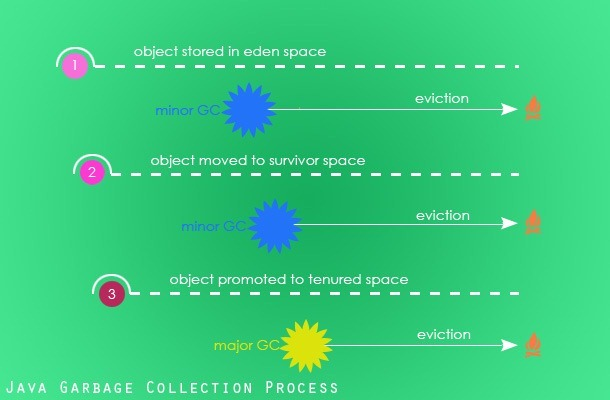

Java垃圾回收机制二 工作原理--How Java Garbage Collection Works?
本文并非原创，翻译自文章How Java Garbage Collection Works? 这篇文章的主要目的是来理解Java垃圾回收机制的基本原理以及它是如何工作的。这是垃圾回收机制系列文章的第二篇。希望您已经读过了第一部分Java垃圾回收简介.
Java垃圾回收是一个自动运行的管理程序运行时使用的内存的进程。通过GC的自动执行JVM将程序员从申请和释放内存的繁重操作中解放出来。
Java垃圾回收GC初始化
作为一个自动执行的进程，程序员不需要在代码中主动初始化GC。Java提供了System.gc()和Runtime.gc()这两个hook来请求JVM调用GC进程。
尽管要求系统机制给程序员提供调用GC的机会，但是实际上这是由JVM负责决定的。JVM可以选择拒绝启动GC的请求，因此并不保证这些请求会真的调用垃圾回收。这是JVM基于内存堆空间的Eden区的使用情况做出的决定。JVM规范将这个选择权利留给了各个JVM的具体实现，因此实际上JVM是如何选择的视不同JVM的实现而定(不过要记住的是，不能依赖于这两个方法的调用，它们是不被保证执行的)。
毫无疑问的是，我们知道垃圾回收进程是不能强制执行的。不过我刚发现一个调用System.gc()确实有意义的场景。看下这篇文章你就会了解System.gc()调用是可用的这个特殊的场景。
Java 垃圾回收进程
垃圾回收是一个回收不再使用的内存空间并将它变成能够为将来的实例使用的过程。 Eden Space:当一个实例被创建的时候，它最初被存放在堆内存空间的年轻代的Eden区中。
注意：如果您不太理解这些术语，建议您先看下介绍内存模型、JVM架构及这些术语的详细解释的文章：garbage-collection-introduction-tutorial
Survivor Space(S0 和S1):作为minor回收周期的一部分，还活着的对象（还有引用指向它）被从eden区中移动到survivor空间S0。同样的，垃圾回收器扫描S0并将活着的实例移动到S1。
无用的对象（没有引用指向）被标记并回收。垃圾回收器（有四种可用的垃圾回收器，将在下一篇文章中介绍）决定这些被标记的实例是在扫描的过程中移出内存还是在另外独立的迁移进程中执行。
Old Generation:老年代或者永久代是堆内存的第二个逻辑部分。当垃圾回收器在做minor GC周期中，S1 survivor区中还活着的实例会被提升到老年代中。S1区中不再被引用的对象被标记并清除。
Major GC:在Java垃圾回收过程中实例生命周期的最后一个阶段。Major GC在垃圾回收过程中扫描属于Old Generation部分的堆内存。如果实例没有被任何引用关联，它们将被标记、清除；如果它们还被引用关联着，则将继续存留在old generation。
Memory Fragmentation:一旦实例从堆内存中删除了，它们原来的位置将空出来给以后分配实例使用。显然这些空闲空间很容易在内存空间中产生碎片。为了能够更快地分配实例地址，需要对内存做去碎片化操作。根据不同垃圾回收器的策略，被回收的内存将在回收的过程同时或者在GC另外独立的过程中压缩整合。
垃圾回收过程中的对象销毁–Finalization
就在移除一个对象并回收它的内存空间之前，Java垃圾回收器将会调用各个实例的finalize()方法，这样实例对象就有机会可以释放掉它占用的资源。尽管finalize()方法是保证在回收内存空间之前执行的，但是对具体的执行时间和执行顺序是没有任何保证的。多个实例之间的finalize()执行顺序是不能提前预知的，甚至有可能它们是并行执行的。程序不应该预先假设实例执行finalize()的方法，也不应该使用finalize()方法来回收资源。
- 在finalize过程中抛出的任何异常都默认被忽略掉了，同时对象的销毁过程被取消
- JVM规范并没有讨论关于弱引用的垃圾回收，这是明确声明的。具体的细节留给实现者决定。
- 垃圾回收是由守护进程执行的
对象何时变成可被垃圾回收的？
- 所有不能被活着的线程到达实例
- 不能被其他对象到达的循环引用对象 Java中有多种不同的引用类型。实例的可回收性取决于它的引用类型。
| Reference | Garbage Collection |
|---|---|
| Strong Refrence | 不被垃圾回收 |
| Soft Reference | 作为最后的选择，有可能被回收 |
| Weak Reference | 可以被垃圾回收 |
| Phantom Reference | 可以被垃圾回收 |
在编译过程中Java编译器有个优化机制，编译器可以选择将null赋值给一个实例，这样就将这个实例标志为可被回收的。
class Animal {
public static void main(String[] args) {
Animal lion = new Animal();
System.out.println("Main is completed.");
}
protected void finalize() {
System.out.println("Rest in Peace!");
}
}
在上面这个类中，实例lion在除了初始化那一行在其他地方都没有被使用到。因此作为一种优化方法，Java编译器可以在初始化那一行后面立即赋值lion = null。这样finlizer可能会在Main方法的SOP之前打印结果。
Rest in Peace！
Main is completed.
但结果的顺序是不确定的，它取决于JVM的实现以及运行时的内存使用情况。从中我们能知道的一点是：编译器在发现一个实例的之后的程序中不再被引用时可以选择提前释放实例内存。
- 这里有个实例何时变成可回收更好的例子。实例所有的属性可以被存储在寄存器中之后可以从寄存器中读取这些属性值，且未来在任何情况下都不会将值写回到实例对象中。这样尽管这个实例在未来还是被使用到了，但是实例对象依然可以被标记为可回收的。
- 何时能被垃圾回收可以简单到仅仅认为在赋值为null的时候也可以复杂到如上面那一点所说的那样。JVM的实现者会做一些取舍。其目标都是希望留下最少的痕迹，提高响应时间增大吞吐量。为了能够达到这些目的，JVM实现者可以在垃圾回收中选择更好的模式或算法来回收内存。
- 当
finalize()被调用的时候，JVM释放掉当前线程的所有同步块。
Example Program for GC Scope
class GCScope {
GCScope t;
static int i = 1;
public static void main(String args[]) {
GCScope t1 = new GCScope();
GCScope t2 = new GCScope();
GCScope t3 = new GCScope();
//没有任何一个对象是可以被GC的
t1.t = t2;//没有任何一个对象是可以被GC的
t2.t = t3;//没有任何一个对象是可以被GC的
t3.t = t1;//没有任何一个对象是可以被GC的
t1 = null;//没有任何一个对象是可以被GC的,t3.t还有对t1的引用
t2 = null;//没有任何一个对象是可以被GC的,t3.t.t还有对t2的引用
t3 = null;//所有3个对象都可以被GC(没有一个被引用了）
//只有各个对象的变量t互相循环引用形成了一个孤立的引用环，而没有外部引用
}
protected void finalize() {
System.out.println("Garbage collected from boject" + i);
i++;
}
}
Example Program for GC OutOfMemoryError
垃圾回收机制并不保证发生内存溢出时的安全，事实上内存溢出将会导致程序的崩溃，抛出OutOfMemoryError。
import java.util.LinkedList;
import java.util.List;
public class GC {
public static void main(String[] args[]) {
List l = new LinkedList();
//进入内部无限循环直接向链表中不断添加元素
do {
l.add(new String("Hello, World!");
} while (true);
}
}
Output
Exception in thread "main" java.lang.OutOfMemoryError: Java heap space
at java.util.LinkedList.linkLast(LinkedList.java:142)
at java.util.LinkedList.add(LinkedList.java:338)
at com.javapapers.java.GCScope.main(GCScope.java:12)
下面将会将垃圾回收系列文章的第三部分：Different types of Java garbage collectors avaliable